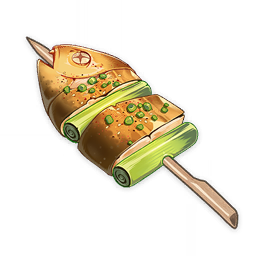
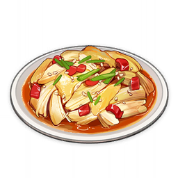

Appetizers

Crystal Shrimp
One of Liyue's traditional snacks. The stuffing is taken from whole fresh shrimp,
and the glistening quality of the flour can be guessed at from the translucence of the outer skin.
as a springy, tasty chew.
Chili-Minced Cornbread Buns
A traditional snack from Liyue. The fresh dough is turned out into a round, rested,
and then placed inside a cage to steam. The meat and vegetables are then washed, diced,
before being fried quickly in an oiled wok. When eaten, the fried condiments must be placed
into the empty space in the middle of the buns before they are eaten together. Between the
crisp vegetables and the flavorful meat, this is solid, great flavor.
Fried Radish Balls
Fried Radish Balls. Fragrant and crispy. Make sure to eat them while they're hot! Said to be a recipe from Liyue.
Fullmoon Egg
One of Liyue's traditional snacks. The egg has been beaten into the flour to form a dough
and the shrimp and fish have been diced, minced, and packaged into the shape of a teacup,
before being garnished with whole shrimp and steamed in a pot. The resulting design is like
that of clouds embracing the moon, hence the name Fullmoon Egg.

Golden Shrimp Balls
A deep-fried shrimp dish. The aroma assaults your senses,
while the crispy potatoes bring out the light sweetness of the shrimp meat.
This, in tandem with its cute, small shape, makes it very enticing indeed.

Grilled Tiger Fish
A fish kebab grilled over an open flame. The fish is a fresh catch straight from the harbor,
lightly picked and swiftly grilled. Its aroma attracts the street cats. Indeed, freshness is the secret of flavor.
Jade Parcels
An exquisite-looking dish. The ham's sweetness is locked inside the fresh vegetables, drizzled with a spicy broth. Delicious is an understatement.
Mint Salad
A fragrant salad dish. Finely chopped Jueyun Chilis blended with a sauce and mixed with Mint leaves. It looks like nothing special,
but it has surprisingly potent powers of refreshment and reinvigoration. It is also the perfect palate-cleanser after a greasy, indulgent meal.
Mora Meat
A large hunk of minced meat packaged inside of a pastry. When you split the pastry in two, minced meat spills out.
The taste of meat grease is all but gone, and the baking process has brought out the sweetness of the pastry.
Such pastries are usually stamped with the word "Mora," all the better to represent wealth and fortune.

Oncidium Tofu
A dish that is a test of one's knifework. All the ingredients were sliced into ribbons in a single go, and after being washed,
they were placed into the broth and cooked till they floated. The resulting flavor is light and fresh, and would not be out of
place as a chef's recommendation in a Liyue restaurant.

Zhongyuan Chop Suey
A seasoned and cooked meat dish. Though it contains animal organ meat and bits and scraps of other things,
the strong-flavored seasonings have masked the stench of the meat. Many have had this dish for the entirety of
their lives without knowing "chop suey" is actually a swear word in the local language.
Jewelry Soup
A simple vegetable soup. Snapdragon, tofu, and lotus seeds are put into boiling water and simmered.
Jewelry Soup earned its luxurious name from the look of the ingredients used, but contrary to its name,
the soup is commonly prepared and served in ordinary households.
Main Dishes
Adeptus' Temptation
A complex, famous type of Liyue cuisine, in which specially selected ingredients are submerged and slowly bowled into soup stock.
The recipe scribbled from memory alone was enough to urge the adepti to once again return to the world of men.
Bamboo Shoot Soup
A soup dish that's been stewed for a good long while. The meat and ham have been diced into small pieces,
and the soup has been kept on low heat till it turned milky white. The process has brought out the distinct
flavors of both kinds of meat, making for an especially tasty soup.

Black-Back Perch Stew
A poached fish dish. The fresh and tasty fish fillets are tender and juicy. The secret to this recipe is
adding powdered Violetgrass into the heated oil to give the dish that aromatic scent. It's spicy, but not too spicy.

Come and Get It
A dish made out of a luxurious variety of ingredients. There is no great refinement in the making of this food,
and it appears in Liyue often during festival season. Whenever this dish is served up, the person at the head of
the table will invite everyone to dig in, saying "Come on, eat, eat," hence the name.

Crab Roe Tofu
A dish with a tender mouthfeel. Crab roe is stir-fried till the oil within oozes
out before being added to boiled tofu and accented with broth. Simple, yes, but gloriously fresh.
Cured Pork Dry Hotpot
A dish fried over a great flame. Matsutake and Ham have been sliced up, stir-fried, and garnished with some spicy condiments.
The flavor of the Ham is a match for the Matsutake's crispness, and the combination grows even lovelier and more addictive as you chew.
The heat-conducting wok also serves to keep it piping hot for long periods.
Golden Crab
A crab dish cooked in the ancient ways. The crab has been chopped into pieces and battered with flour,
before being stir-fried till golden and rich with flavor. It is worthy of the word "gold," whether in terms of appearance or quality.

Jueyun Chili Chicken
Cold chicken mixed in dressings. The finesse technique used in mixing the dish retained the
freshness of the delightful juice contained within the chicken. The glowing gold chicken skin hides a mildly hot flavor underneath.
Jueyun Guoba
One of Liyue's specialty snacks. Stir-fried ham and Jueyun Chili sprinkled on a crispy
crust made from Rice and Horsetail create a refined, meaty snack that transforms humble Rice into a hot delicacy.
Matsutake Meat Rolls
A pan-fried meat dish. Ground meat is put on the Matsutake and gently pan-fried on low heat
so the Matsutake can fully take in the aromatic juice of the meat. It's a mouthwatering delicacy in all of its glory.
Minty Meat Rolls
A sour-and-spicy dish. The marinated meat has been thinly sliced and rolled into the mint leaves,
before being brushed with a sauce blend containing Jueyun Chilis. The unique mint flavor adds the
finishing touch to this dish, turning it into an excellent addition to any cold platter.
Noodles with Mountain Delicacies
Noodles in a meat-and-vegetable sauce. The sauce has a rustic flavor, and there's a generous amount of it mixed
in with the noodles. A humble but enduringly popular dish.
Qingce Stir Fry
A dish cooked over a roaring fire. They say it was originally just a rustic dish that everyone in Qingce Village knew how to make.
But quite unexpectedly, its crispy and spicy dishes gained the recognition of people from elsewhere, and thus began to spread throughout the Liyue region.

Squirrel Fish
A hard-to-prepare fish dish. The fish is first completely deboned before crisscross cuts are made on the skin.
The fish is then coated in flour and deep-fried to a golden-brown color, then served with ketchup drizzled on top.
It is tender and juicy on the inside and crispy on the outside. The dish resembles a squirrel's tail to a certain degree, hence the name.
Stir-Fried Filet
Sliced meat flash-fried in a wok. The mild Jueyun Chili adds just the right amount of kick to
the delicious aroma of the meat. Perfect as an appetizer and also goes well with rice.
Stir-Fried Fish Noodle
A main dish with an intense flavor. Created by stir-frying rice noodles, par-cooked fish,
and various side dishes in a wok on high flame. The noodles, having absorbed the flavors of various ingredients,
are springy and smooth to the taste, making this dish a big hit with diners.
Stir-Fried Shrimp
A light and smooth dish. The shrimp are quickly sautéed and the sauce thickened.
This method of cooking is exceedingly simple and enhances the innate freshness of the shrimp meat,
granting it a place at humble home-cooked meals and lavish banquets alike.
Stone Harbor Delicacies
Wok-fried vegetarian food. A stir-fried selection of three ingredients hailing from Liyue.
Though the methodology is simple, it brings out the intense, innate flavors of the ingredients,
and does not fade in brilliance when compared to some high-class delicacy.
Tianshu Meat
A braised meat dish. The cut of meat is a happy medium between lean and fatty,
and has been braised to smoking perfection. The ingredients glisten, and are soft but not greasy.
Word has it that the Tianshu of a certain generation of the Liyue Qixing invented this dish after much painstaking development.
Triple Layered Consommé
A neatly arranged dish. The ham, fowl, and bamboo shoots have been sliced into threads of equal length,
and they've been laid out neatly in the soup bowl after being steamed at high heat, before being covered in consommé.
The layers are distinct, and the mouthfeel is salty yet fresh.
Vegetarian Abalone
A vegetarian dish with a rich flavor. The matsutake has been sliced thin and fried till golden before pouring the sauce.
The matsutake meat is sumptuous and has flavor to match that of fresh abalone — almost enough to make you think it was the real thing.
Desserts
Almond Tofu
A dessert made out of almond. It has a silky-smooth texture with a long-lasting aroma of almond.
It's named tofu only because of its tofu-like shape.
Chicken Tofu Pudding
A dish made with great precision. The finely-diced chicken breast is stirred strongly and added
into a soup that has various other minced meats within, before being cooked over a small flame.
The result is light and elegant, and it tastes like tofu pudding. The meat has been shaped such that i
t is "a chicken above chickens, yet does not look like chicken." This, too, is part of Liyue's culinary fine arts.
Lotus Flower Crisp
One of Liyue's traditional snacks. Sweet stuffed lotus wrapped in a crispy, deep-fried crust.
Its layers of flower petals unravel perfectly in the palm of your hand.
Lotus Seed and Bird Egg Soup
A steaming egg dish. The clear, gold colors of the egg custard have been embellished with several lotus roots.
Regardless of whether it is breakfast or a post-meal snack, its superior nutritional value can greatly nourish the body.
Pop's Tea
Tea from Liyue. After a grueling trek around the vast region of Liyue,
there's nothing more rejuvenating than a big swig of tea from Pop's Teas.
Rice Buns
Soft and fluffy food. The rice and horsetail have been ground into flour and kneaded into dough before being put in a steaming basket.
It can be eaten as-is or with vegetable stuffing. Portable and filling, it is a very popular dish in the Liyue region.
Rice Pudding
A dessert made from rice. After cooking the rice beforehand, it is placed into a pot together with the other ingredients,
stirred evenly, and steamed. The mouthfeel is fragrant and soft, a perfect denouement to any meal.

Universal Peace
Colorful staple food. Maintains perfect balance between soft and fragrant rice
and all kinds of carefully selected sweet ingredients. This dish is mainly known
for its meaning as a symbol of prosperity and peace, and less so for its taste.
However, with such noble ideals behind it, its flavor should not disappoint.